Arki Engine.
The research behind the twins.
Arki Engine is our real-time design platform on Unreal Engine. Grasshopper logic drives the geometry, so a pavilion, a tower or a whole district regenerates as the parameters move, with the schedule attached. Everything we learn here goes into the twins.
Watch the tools think.
Four configurators, each recorded live. Sliders move, geometry regenerates, and the numbers on the panel recompute with it.
755 components · 2,257 m² · timber, stock or polycarbonate on one slider
Office T46 · 20 floors · 864 glazed panels · Westminster 3D Tiles
19,551 m² plot · FAR 1 to 6 · parking, set-backs, green ratio
30 levels · 330 planted balconies · 14,584 m² recomputed as you drag
Our own town, as a living model.
Stockport town centre from 899 real building footprints. Toggle the layers a twin carries: heights, landmarks, the live feeds a council already publishes, and the studio itself.
Drag to orbit, tap a building for its name. The red beam marks the studio at 45 Middle Hillgate.
Feed values are simulated for illustration. Named sources are the kinds of public and operator feeds we integrate, always under the data owner's terms. Building footprints © OpenStreetMap contributors, projected from EPSG:4326 to local metres.
From Grasshopper to game engine.
Every configurator starts life as a Grasshopper definition. The RH_IN parameters on these canvases, component count, floor height, form curvature, material, become the live sliders in Unreal Engine, so the logic architects already trust drives the real-time model.
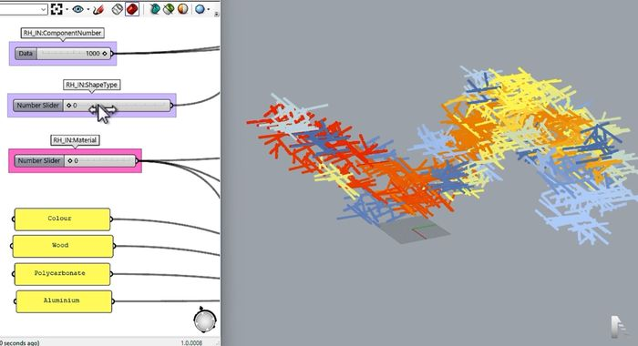
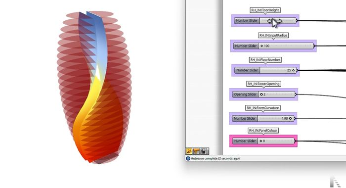
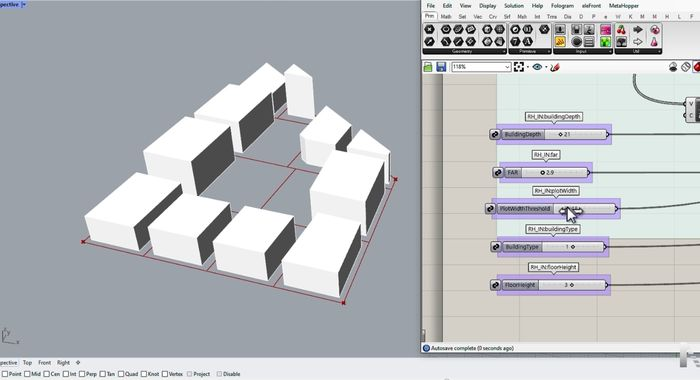
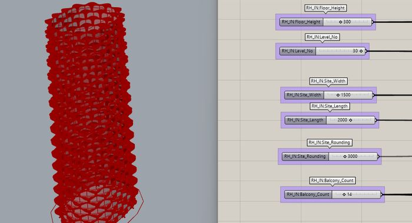
Eight studies from the engine.
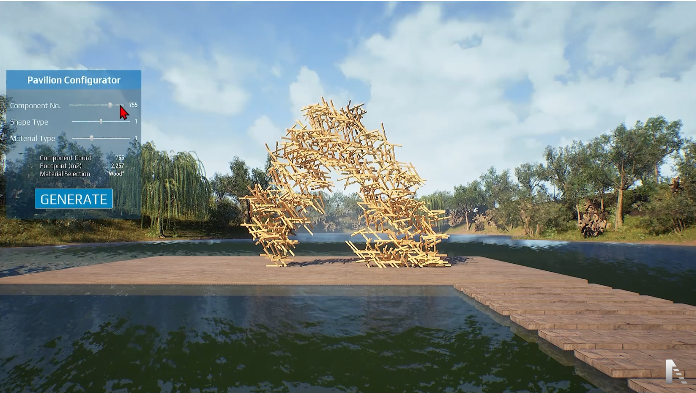
Timber Pavilion
755-component aggregation
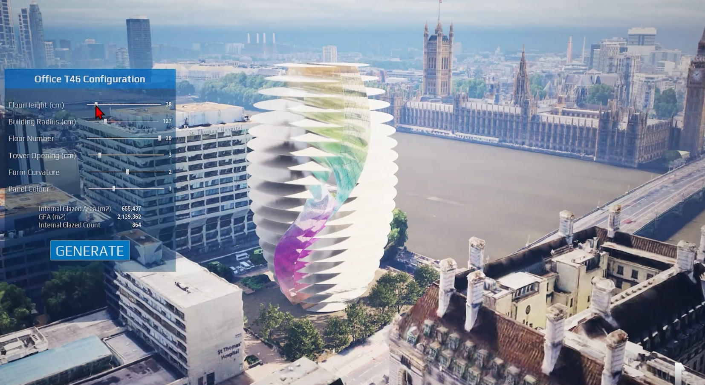
Office Tower T46
Parametric massing study
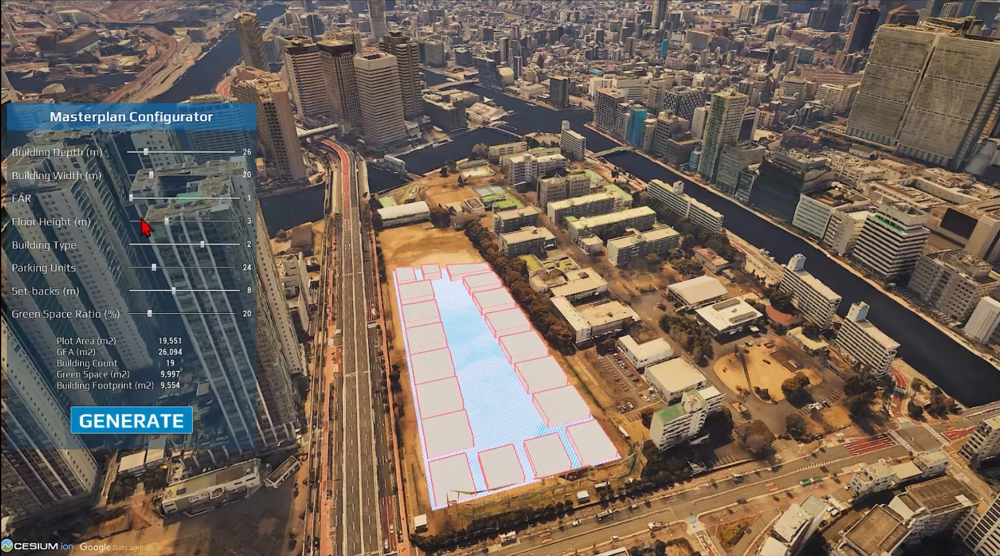
District Masterplan
Data-driven parcel layout
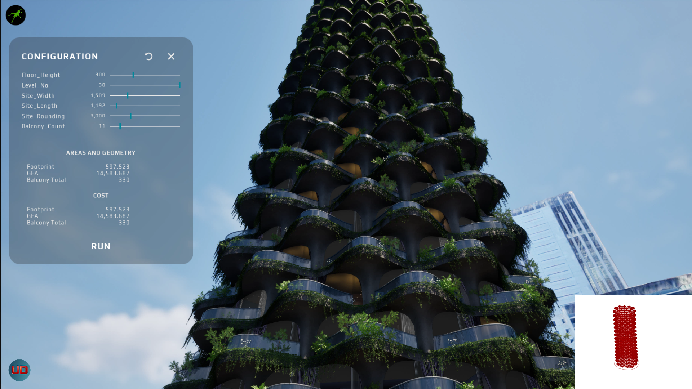
Residential Tower
Real-time facade study
Canopy Pavilion
Generative structure
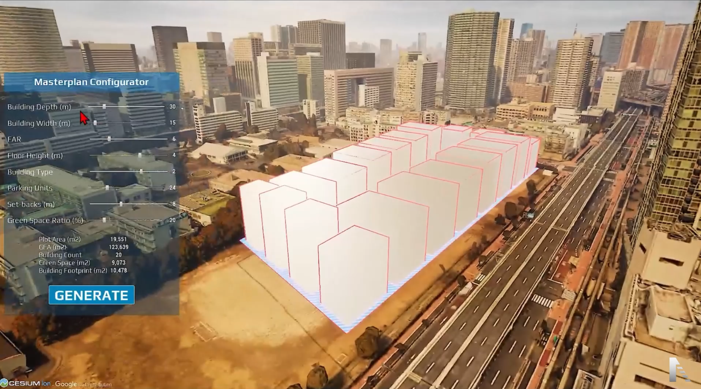
Urban Plan
Context + zoning layers
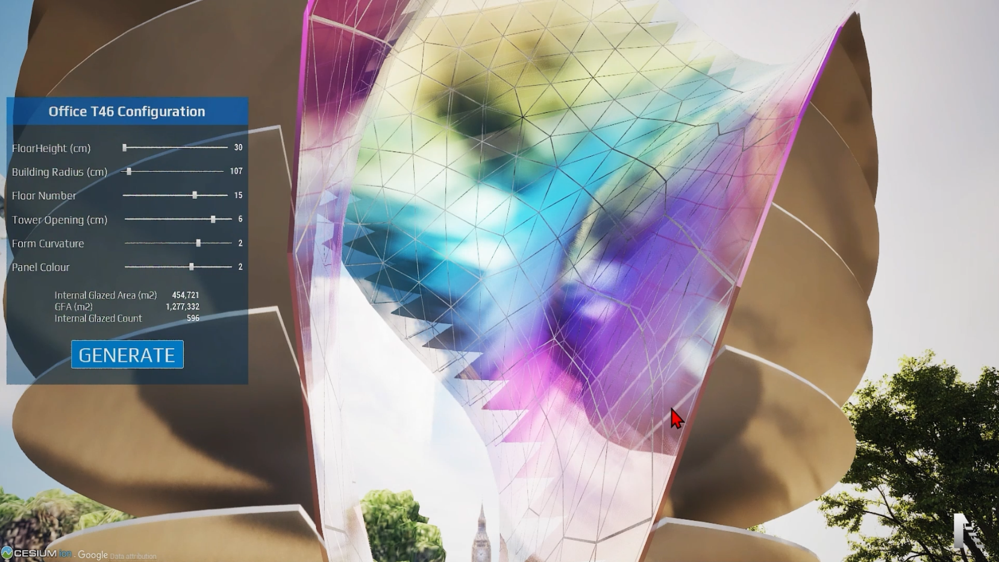
Mixed-Use Tower
Configurable geometry
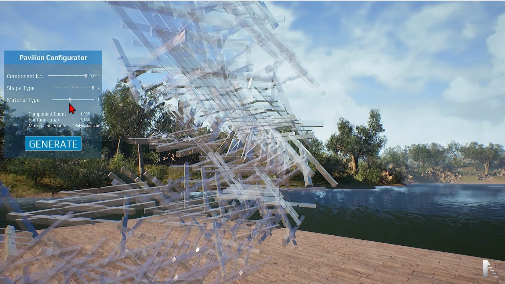
Waterfront Pavilion
Material configurator
Scroll to rotate the gallery
What the lab runs on.
Parametric logic in Rhino and Grasshopper, BIM in Revit, GIS in QGIS, real-time in Unreal Engine 5 with Cesium and PLATEAU tiling, and a data layer of IFC, TopologicPy, graph databases and FastAPI bridges holding it together.
Bring us the problem the standard tools can't hold.
Research partnerships, custom configurators and twin pipelines built around your data.